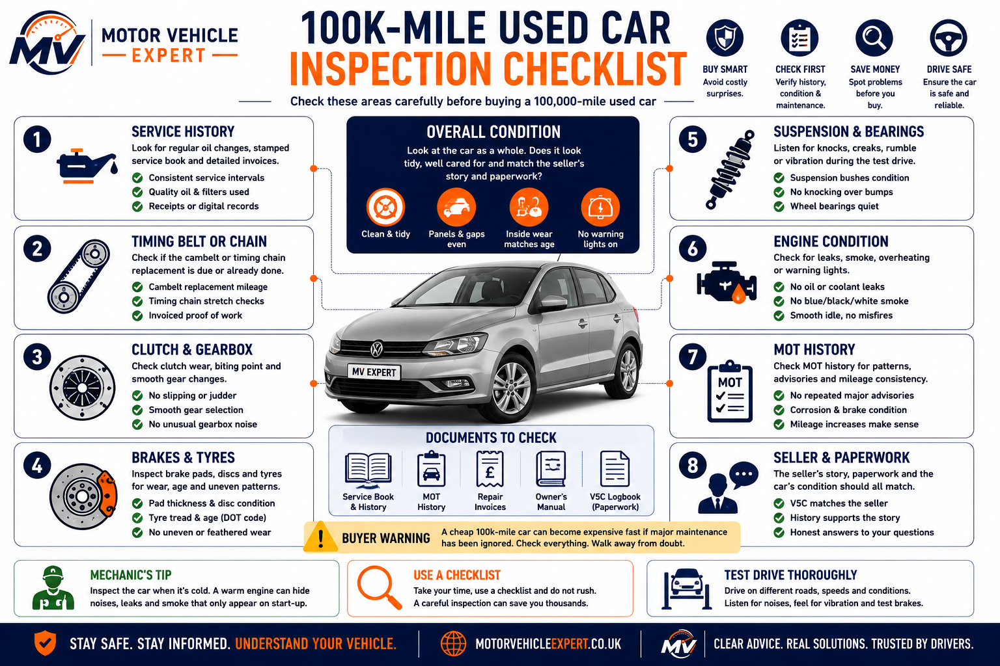
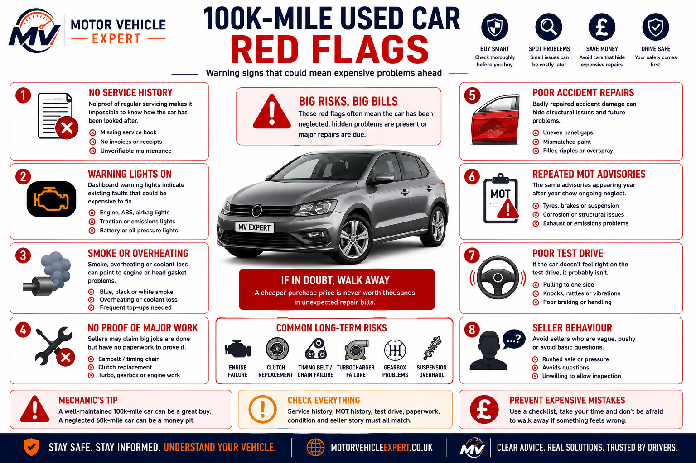
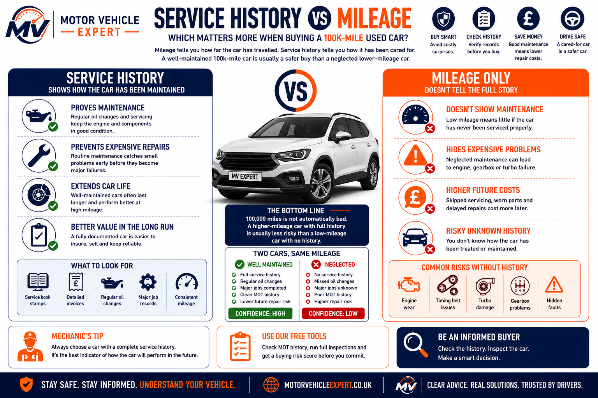
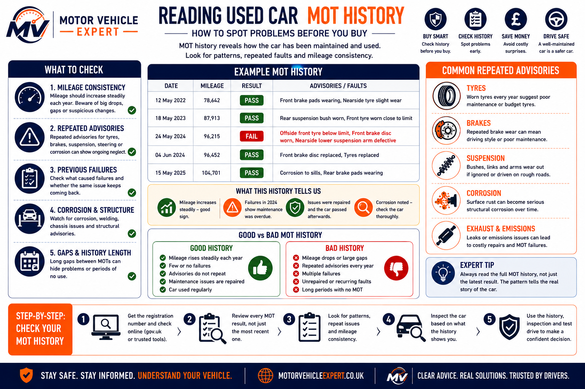

Is 100k miles too much for a used car?
No, 100,000 miles is not automatically too much for a used car. A well-maintained 100k-mile vehicle with strong service history, clean MOT records and sensible ownership can be a better buy than a neglected lower-mileage car.
Best case
Regular servicing, long-distance use, clean MOT history, good tyres, no warning lights and proof of major maintenance.
Risk case
Patchy history, repeated advisories, overdue cambelt, clutch wear, smoke, leaks, warning lights or a poor test drive.
Buyer rule
Judge the car by condition, history and repair evidence — not mileage alone.
The question is not only “has it done 100,000 miles?” The real question is whether the previous owner has already paid for the major maintenance that usually appears around this mileage.
For broader mileage advice, read best mileage to buy a used car UK.
What 100,000 miles really means
At 100,000 miles, many cars are still perfectly usable, but they are no longer low-mileage cars. Some wear items may already have been replaced, while others may be due soon. This is where service history, MOT history and test drive behaviour become more important than the mileage number itself.
1. Wear items matter
Brakes, tyres, suspension, battery, clutch and fluids may all need closer inspection around this mileage.
2. History matters
A 100k car with invoices and regular servicing is usually less risky than one with no proof of maintenance.
3. Usage matters
Motorway mileage can be easier on a car than years of short trips, cold starts, stop-start traffic and poor servicing.
4. Price matters
The price should reflect mileage, condition, upcoming repairs and whether major maintenance has already been done.
Good 100k miles
Regular servicing, motorway use, good tyres, clean MOT history, recent major work and sensible ownership.
Risky 100k miles
Patchy service history, dashboard warning lights, rough running, overdue major work or repeated MOT advisories.
Mileage is only one clue
Condition, paperwork, MOT records, repair invoices and test drive behaviour tell the real story.
Do not buy a 100k-mile car just because it looks cheap. If the clutch, cambelt, brakes, tyres, suspension or cooling system are overdue, the first year of ownership can become expensive very quickly.
What to check before buying a 100k-mile used car
A car that has covered 100,000 miles is not automatically a bad purchase, but it should be inspected more carefully than a lower-mileage vehicle. The aim is to establish whether previous owners have kept up with servicing and major maintenance, or whether expensive repairs have simply been delayed until after the sale.
Many buyers focus on the mileage figure alone. Professional mechanics look at maintenance history, MOT records, repair invoices, overall condition and how the car performs during a proper test drive. These factors usually predict reliability far better than mileage.
1. Service History
Look for regular oil changes, stamped services and detailed invoices. Evidence of consistent maintenance is one of the strongest indicators of long-term reliability.
2. Timing Belt or Chain
Check whether the cambelt replacement or timing chain inspection is due, or whether the work has already been completed with supporting invoices.
3. Clutch & Gearbox
On manual cars, check for clutch slip, a high biting point, vibration, gearbox noise and smooth gear selection.
4. Brakes & Tyres
Inspect brake discs, brake pads, tyre tread, tyre age and uneven wear patterns that may indicate suspension or alignment problems.
5. Suspension
Listen for knocks, creaks, humming wheel bearings and excessive vibration over uneven roads.
6. Engine Health
Check for oil leaks, coolant leaks, overheating history, smoke, warning lights, rough idle and unusual engine noises.
7. MOT History
Look for repeated advisories, corrosion, suspension wear, brake defects and consistent annual mileage progression.
8. Seller Confidence
The paperwork, vehicle condition and seller's answers should all support each other. Be cautious if the story does not match the evidence.

Working through each inspection area helps identify neglected maintenance before it becomes an expensive ownership problem.
Low Buying Risk
Complete service history, clean MOT records, recent major maintenance, smooth test drive and supporting invoices.
Medium Buying Risk
Minor advisories, some missing paperwork or wear items due soon, but otherwise a genuine, well-presented vehicle.
High Buying Risk
Warning lights, poor service history, repeated MOT failures, overheating, major leaks or evidence of neglected maintenance.
If a seller claims expensive work such as a cambelt, clutch, timing chain or gearbox replacement has already been completed, always ask for invoices. Genuine documentation is far more valuable than verbal reassurance.
For a complete buying inspection, use our used car inspection checklist, used car test drive checklist and questions to ask when buying a used car.
Good signs on a 100k-mile car
A 100,000-mile used car becomes much more attractive when the evidence shows it has been maintained properly, driven sensibly and priced realistically. These positive signs help separate a genuinely cared-for high-mileage car from one that may be hiding expensive repairs.
Regular Servicing
Consistent servicing, regular oil changes and believable maintenance records suggest the engine and major systems have not been neglected.
Service history guide →Mostly Longer Journeys
A car used mainly for longer journeys may have had fewer cold starts, less stop-start wear and better conditions for the engine, battery, clutch and exhaust system.
Good Paperwork
Invoices, MOT records, service receipts and repair paperwork help prove maintenance instead of relying only on what the seller says.
MOT history guide →Recent Major Work
Evidence of clutch, cambelt, brake, tyre, battery, suspension or cooling system work can reduce the chance of a large repair bill after purchase.
Repair costs guide →Clean Test Drive
Smooth acceleration, straight steering, clean braking, stable temperature, no smoke and no warning lights are all strong buying signals.
Test drive checklist →Price Reflects Mileage
A 100k-mile car should usually be cheaper than a similar lower-mileage example, unless condition, history and recent maintenance strongly justify the price.
The best 100k-mile cars usually feel honest. The paperwork matches the mileage, the MOT history makes sense, the seller can explain the car clearly and the test drive does not reveal hidden warning signs.
Bad signs on a 100k-mile car
Not every 100,000-mile car is a bargain. Some have simply reached this mileage without receiving the maintenance they needed. These warning signs often indicate hidden repair costs, poor ownership or an increased risk of expensive mechanical failures shortly after purchase.
No Service History
Missing or incomplete servicing makes it impossible to verify whether essential maintenance has been carried out.
Dashboard Warning Lights
Engine, ABS, airbag or other warning lights should always be investigated before agreeing to buy the vehicle.
Engine Problems
Smoke, overheating, coolant loss, rough running, oil leaks or engine knocking can all indicate major mechanical problems.
No Proof Of Repairs
If the seller claims expensive work has been completed but cannot provide invoices, assume the work may never have been done.
Poor Accident Repairs
Uneven panel gaps, paint mismatches and signs of poor body repairs may suggest previous accident damage.
Repeated MOT Advisories
Recurring advisories for brakes, tyres, suspension or corrosion often show long-term neglect rather than isolated repairs.
Poor Test Drive
Steering pull, suspension knocks, excessive vibration, gearbox faults or brake problems should never be ignored.
Seller Behaviour
A seller who avoids questions, rushes the sale or refuses inspections should immediately increase your buying caution.

Most expensive used-car mistakes begin with one or two small warning signs that buyers choose to ignore.
Low Risk
Only minor cosmetic defects, complete paperwork and a fault-free inspection.
Medium Risk
Some wear items are due soon, but maintenance history supports the vehicle.
High Risk
Multiple warning lights, missing history, overheating, repeated MOT failures or obvious neglect.
Never buy a high-mileage car because it appears cheap. One neglected clutch, timing belt, turbocharger or gearbox repair can easily cost more than the money saved on the purchase price.
Why service history matters more than the mileage
Professional buyers place far more importance on documented maintenance than the mileage shown on the odometer. A complete service history demonstrates that routine servicing, preventative maintenance and major repairs have been carried out throughout the vehicle's life.
Service Invoices
Invoices prove exactly what work has been completed rather than simply showing a service stamp.
Oil Change History
Regular oil changes help protect engines, turbochargers and timing chains from premature wear.
Major Maintenance
Evidence of cambelt, water pump, clutch, brakes, suspension and battery replacement adds confidence.
Mileage Consistency
Service records should closely match MOT mileage and the vehicle's overall condition.

Two identical cars with 100,000 miles can have completely different futures. The one with complete servicing and documented repairs is usually the safer investment.
Read our complete guide: How to check service history before buying a used car →
Use MOT history to uncover hidden problems
The MOT history often tells the story that sellers cannot. Repeated advisories, recurring failures and unusual mileage patterns frequently reveal maintenance issues that are not immediately visible during a viewing.
Consistent Mileage
Mileage should increase steadily each year without unexplained drops or unusually long gaps.
Repeated Advisories
Repeated brake, tyre, suspension or corrosion advisories often indicate ongoing neglect.
Previous Failures
Check whether MOT failures were repaired properly rather than repeatedly appearing year after year.
Corrosion History
Repeated structural corrosion advisories can become very expensive repairs later.
Vehicle Usage
The MOT history often reveals whether the vehicle has been used regularly or spent long periods unused.
Seller Accuracy
Compare MOT records with the seller's description. Any inconsistencies deserve further investigation.

Never look only at whether a car passed its MOT. The advisory history often provides a much better indication of how well the vehicle has been maintained throughout its life.
Useful guides: How to check MOT history before buying • MOT advisory meaning explained
Test drive checks for a 100k-mile used car
A proper test drive is one of the most important parts of buying a higher-mileage vehicle. It allows you to assess the engine, transmission, steering, brakes and suspension under real driving conditions. Ideally, begin with a completely cold engine and drive on a mixture of town roads, faster A-roads and rougher surfaces to identify faults that may not be obvious when the car is stationary.
1. Cold Start
Start the engine from cold and listen for timing chain rattle, tapping, long cranking, excessive smoke, rough idle or dashboard warning lights. Many engine problems only appear before the engine warms up.
2. Acceleration
The engine should accelerate cleanly without hesitation, misfires, turbo lag, smoke or noticeable power loss. Check that the gearbox changes smoothly throughout the rev range.
Power loss guide →3. Clutch & Gearbox
Manual cars should have a smooth clutch bite, light pedal operation and quiet gear changes. Watch for clutch slip, gearbox crunching, vibration or dual-mass flywheel noise.
Clutch wear signs →4. Steering & Brakes
The vehicle should brake in a straight line without vibration, pulling, grinding noises or a soft brake pedal. Steering should remain accurate with no excessive play.
Grinding brakes guide →5. Suspension & Wheel Bearings
Drive over uneven roads and speed bumps. Listen for suspension knocks, worn bushes, wheel bearing humming, excessive tyre noise or vibration through the steering wheel.
6. Engine Temperature
Allow the engine to reach normal operating temperature. It should remain stable without overheating, coolant smells, steam, warning lights or poor heater performance.
Overheating causes →Excellent Test Drive
Starts instantly, drives smoothly, changes gear cleanly, brakes confidently and produces no unusual noises or warning lights.
Acceptable Test Drive
Minor cosmetic faults or light wear may be acceptable, but any unusual noises or vibrations should be investigated before purchase.
Poor Test Drive
Engine smoke, overheating, gearbox faults, steering pull, severe vibration, brake problems or warning lights can indicate expensive repairs.
Never let the seller warm the car up before you arrive. A genuine cold start reveals many engine, timing chain, battery and starting problems that can disappear once the engine reaches operating temperature.
Repair costs that commonly appear around 100,000 miles
Reaching 100,000 miles does not automatically mean a car needs expensive repairs. However, many major wear components naturally reach the end of their service life around this mileage. The biggest financial mistake is buying a car where these repairs have been delayed and become your responsibility.
Always ask whether these major maintenance items have already been completed. Spending a little more on a well-maintained car is often far cheaper than buying a neglected example that immediately needs thousands of pounds in repairs.
Clutch Replacement
Manual cars driven in heavy traffic may require a clutch around this mileage, especially if the biting point is high or the clutch slips.
£500–£1,300Cambelt & Water Pump
Many manufacturers recommend cambelt replacement before or around 100,000 miles. Ignoring replacement intervals can result in catastrophic engine damage.
£350–£900Brake Discs & Pads
Brake components naturally wear with mileage. Uneven wear, corrosion or vibration usually means replacement is approaching.
£220–£650Wheel Bearings
A humming or droning noise that increases with road speed often points to worn wheel bearings requiring replacement.
£180–£450Cooling System Repairs
Thermostats, water pumps, radiators and coolant leaks become increasingly common as vehicles age and components deteriorate.
£150–£900+Battery & Charging System
Older vehicles may require a replacement battery, starter motor or alternator, particularly if electrical problems begin appearing.
£120–£700Typical Repair Budget For A 100k-Mile Used Car
| Condition | Typical First-Year Spend | Buying Risk |
|---|---|---|
| Excellent service history | £0–£400 | Low |
| Average maintenance | £400–£1,200 | Medium |
| Poor service history | £1,500–£4,000+ | High |
A 100,000-mile car that has recently had a cambelt, clutch, brakes and suspension replaced can actually be a better long-term purchase than a lower-mileage vehicle where all of those repairs are still waiting to happen.
For a complete breakdown of ownership costs, read our UK Car Repair Costs Guide.
Is 100,000 miles different for petrol, diesel, hybrid and premium cars?
The importance of 100,000 miles varies depending on the type of vehicle and how it has been used. Different powertrains have different maintenance requirements, common faults and long-term ownership costs. Understanding these differences helps you assess whether a high-mileage car represents good value or an expensive mistake.
Petrol Cars
A well-maintained petrol car with 100,000 miles can still offer many years of reliable service. Look for consistent servicing, smooth cold starts, clean exhaust emissions and evidence of regular oil changes.
Diesel Cars
Diesels often cope well with high motorway mileage, but buyers should carefully check DPF health, turbocharger condition, injector performance and whether the vehicle has mainly completed longer journeys.
DPF warning guide →Hybrid Cars
Inspect the service history, hybrid battery health, regenerative braking performance and ensure the transition between petrol and electric power is smooth and fault-free.
Premium Cars
Luxury vehicles can remain excellent at 100,000 miles, but suspension, electronics and specialist servicing usually cost considerably more than equivalent mainstream models.
| Vehicle Type | Buying Risk | Main Checks |
|---|---|---|
| Petrol | Low–Medium | Oil history, timing components, cooling system |
| Diesel | Medium | DPF, turbocharger, injectors, EGR, service history |
| Hybrid | Medium | Battery health, warning lights, hybrid operation |
| Premium | Medium–High | Suspension, electronics, specialist servicing |
Mileage should always be considered alongside the vehicle's maintenance history and intended use. A diesel that has completed regular motorway journeys may be a safer purchase than a petrol car that has spent its entire life making short urban trips.
For more advice, read Is a high-mileage diesel worth buying?.
When you should walk away from a 100k-mile used car
Not every high-mileage vehicle deserves further consideration. If several of the following warning signs are present, the safest financial decision is often to continue your search rather than gamble on expensive repairs.
Missing History
No service records or evidence of major maintenance.
Poor MOT Pattern
Repeated advisories, corrosion or suspicious mileage inconsistencies.
Engine Problems
Smoke, overheating, coolant loss, oil leaks, rough running or poor acceleration.
Warning Lights
Engine, ABS, airbag or transmission warning lights remain illuminated.
Transmission Faults
Clutch slip, gearbox crunching or dual-mass flywheel vibration.
Unsafe Test Drive
Steering pull, brake vibration, suspension knocks or excessive tyre noise.
Questionable Repairs
Poor body repairs, inconsistent paintwork or accident damage that doesn't match the seller's explanation.
Too Cheap
A bargain price often reflects expensive repairs waiting for the next owner.
Proceed
Complete history, excellent condition, clean MOT records and a fault-free inspection.
Negotiate
Minor wear items are acceptable if the asking price reflects the work required.
Walk Away
Multiple warning signs, expensive repairs and missing documentation usually outweigh any saving.
There will always be another used car. Walking away from one poor example is usually far cheaper than paying for years of neglected maintenance.
Bottom line: should you buy a 100,000-mile used car?
Yes—provided the vehicle has been maintained properly, priced fairly and passes a thorough inspection. Modern cars are capable of covering well over 100,000 miles when serviced correctly, making mileage only one part of the buying decision.
Buy With Confidence
Strong service history, clean MOT record, documented repairs, excellent test drive and realistic asking price.
Proceed Carefully
Some maintenance is due, but the overall condition and history justify further consideration.
Walk Away
Missing paperwork, warning lights, overheating, smoke, gearbox faults or obvious neglect usually make the purchase poor value.
A well-maintained 100,000-mile car is often a smarter purchase than a neglected 60,000-mile example. Focus on maintenance history, MOT records, condition and inspection results rather than judging the vehicle by mileage alone.
Related used car buying guides
A 100,000-mile car should never be judged by mileage alone. Use these related guides to check the wider buying picture, including service history, MOT records, repair costs, clocked mileage, accident damage and seller risk before making a final decision.
Mileage & Value
Understand whether the car is priced fairly for its age, mileage, condition and ownership risk.
Best mileage guide →Diesel Buying Risk
High-mileage diesels can be good buys, but DPF, turbo, injector and short-trip history must be checked.
High-mileage diesel guide →Inspection Checklist
Use a structured checklist to inspect bodywork, tyres, brakes, fluids, warning lights and mechanical condition.
Inspection checklist →Test Drive Checks
A proper test drive can reveal clutch slip, gearbox faults, suspension knocks, brake vibration and overheating.
Test drive checklist →Seller Questions
Ask the right questions before viewing to uncover missing history, hidden repairs and unrealistic seller claims.
Questions to ask →No Service History
A car with missing service history needs extra caution, especially around 100,000 miles.
No service history guide →Service Records
Learn how to check stamps, invoices, digital records and mileage consistency before trusting the paperwork.
Service history guide →MOT History
MOT records can reveal repeated advisories, mileage issues, corrosion, brake wear and long-term neglect.
MOT history guide →Clocked Mileage
Check for mileage inconsistencies, suspicious wear and paperwork gaps before trusting the odometer.
Clocked mileage signs →Cat S vs Cat N
Understand insurance write-off categories before buying a repaired high-mileage car.
Cat S vs Cat N →Accident Repairs
Poor paintwork, uneven gaps and hidden structural repairs can turn a cheap car into a risky purchase.
Accident repair signs →Repair Costs
Estimate likely first-year repair costs before buying a car with higher mileage.
Repair costs guide →If several of these guides reveal risk at the same time — poor service history, repeated MOT advisories, accident repair signs and likely repair costs — the car is probably not cheap. It is expensive work waiting for the next owner.
Frequently asked questions about buying a 100,000-mile used car
These are some of the most common questions UK buyers ask when considering a used car with around 100,000 miles. The answers below summarise the key points covered throughout this guide.
Is 100k miles too much for a used car?
No. Mileage alone does not determine whether a car is worth buying. Service history, MOT records, overall condition, maintenance and how the vehicle has been driven are far more important than the number shown on the odometer.
Is 100k miles bad for a petrol car?
Not automatically. Many modern petrol engines comfortably exceed 100,000 miles when serviced correctly. Look for regular oil changes, smooth cold starts and evidence of preventative maintenance.
Is 100k miles bad for a diesel?
No. High motorway mileage is often easier on a diesel than repeated short journeys. However, always inspect the DPF, turbocharger, injectors and service history before buying.
Is service history more important than mileage?
Usually yes. Complete servicing and supporting invoices provide a much clearer picture of how the vehicle has been maintained throughout its life.
Can a 100k-mile car still be reliable?
Yes. Many well-maintained cars continue to provide reliable service well beyond 100,000 miles. Reliability depends far more on maintenance than mileage alone.
Should I avoid cars with over 100,000 miles?
Not necessarily. Avoid cars with missing history, repeated MOT advisories, warning lights, overheating, accident damage or evidence that major maintenance has been ignored.
What repairs become common after 100k miles?
Depending on the vehicle, buyers may encounter clutch replacement, cambelt renewal, suspension wear, brake components, wheel bearings, cooling system repairs and battery or alternator replacement.
Should the cambelt already have been replaced?
Many vehicles require cambelt replacement before or around 100,000 miles. Always ask for invoices proving the work has been completed where applicable.
Does motorway mileage matter?
Yes. Regular motorway driving usually produces less clutch wear, fewer cold starts and fewer DPF issues than continuous urban stop-start driving.
Should I pay for a professional inspection?
If you are buying an expensive vehicle or have any doubts about its condition, an independent inspection can identify hidden faults before you commit to the purchase.
Can a car pass an MOT but still be a poor buy?
Yes. An MOT confirms the vehicle met minimum roadworthiness standards on the day of the test. It does not guarantee the engine, clutch, gearbox or other expensive components are in good condition.
Should repeated MOT advisories worry me?
Yes. Advisories that appear year after year often indicate maintenance has been delayed rather than properly completed, increasing the likelihood of future repair bills.
How much should I budget after buying?
Even a well-maintained 100,000-mile car may require routine servicing and normal wear items. Setting aside a maintenance budget during the first year of ownership is sensible.
What is the biggest mistake buyers make?
Focusing on mileage while ignoring service history, MOT records and the quality of previous maintenance. These factors usually determine whether the vehicle becomes a reliable purchase or an expensive mistake.
What is the safest way to buy a 100k-mile car?
Inspect the vehicle thoroughly, verify the paperwork, review the MOT history, complete a proper test drive and never rush into a purchase because the price appears attractive.
Would a mechanic buy a 100k-mile car?
Yes—provided the maintenance history, condition and inspection results justify the asking price. Professional mechanics often prefer a well-maintained higher-mileage car over a neglected low-mileage example.
A 100,000-mile car should never be judged by mileage alone. If the service history is complete, the MOT history is consistent, the condition matches the paperwork and the vehicle performs well during inspection and test drive, it can represent excellent value and many years of reliable motoring.